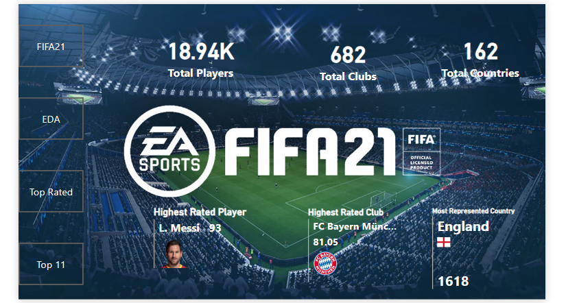
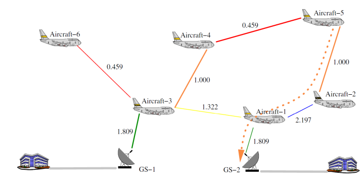

Designed an insightful Power BI reporting solution for Forggith Pharmaceuticals, providing a deep dive into
sales and marketing performance, and empowering stakeholders with data-driven insights for optimized performance.


End-to-end analytics pipeline for data cleaning, integration, and visualization; delivers an actionable business dashboard.
Comprehensive SQL analysis of Pizza Runner’s data to generate insights for operations efficiency and customer service improvement.

SQL analysis to provide actionable insights for enhancing customer experience and supporting decisions.

In-depth analysis and forecasting for two US cab companies; compares market dynamics, performance, and profiles.

Wrangling, EDA, feature engineering, and a deployed predictive model for term-deposit subscription.

Regression model (98% accuracy) to predict player value; dashboard built in Power BI.

Dijkstra & extended Dijkstra to solve real-life routing for 216 airplanes while maximizing throughput and minimizing latency.

EDA on Olympics dataset (1896–2014) combining summer/winter games and economic indicators.